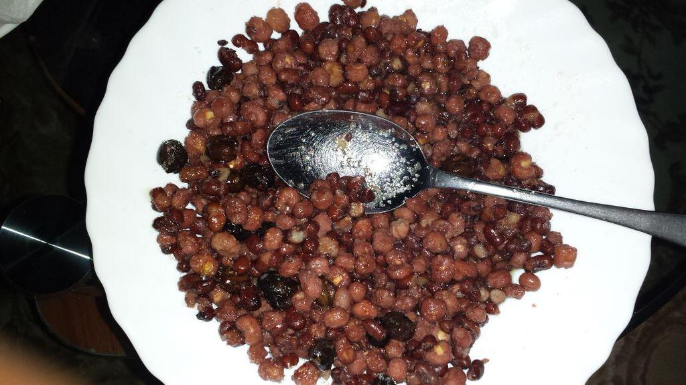

Cambuulo

Description
Cambuulo is a traditional Somali dish made with red adzuki beans. It’s a versatile meal, often enjoyed as both a dinner and a dessert, depending on how it’s prepared. In this version, the beans are cooked with butter and sugar, giving them a sweet flavor. Though simple in ingredients, Cambuulo’s slow cooking method allows the beans to develop a rich texture that pairs well with the sweetness of the sugar and butter.
Ingredients
- ½ cup dry red adzuki beans
- 2 cups water
- 1 tsp salted butter
- 1 tsp sugar
- 1 pinch nutmeg
Steps
- Soak beans overnight with enough water to cover an inch or 2 over the beans.
- Drain beans and add water and beans to a large saucepan.
- Bring to a boil then turn down to low heat. Simmer on low for 1 hour, stirring occasionally.
- After 1 hour, the water should be absorbed. Add butter. Stir well and keep on low. Cook 10 more minutes, stirring often.
- In the last 2 minutes, stir in nutmeg and sugar then serve.
Home